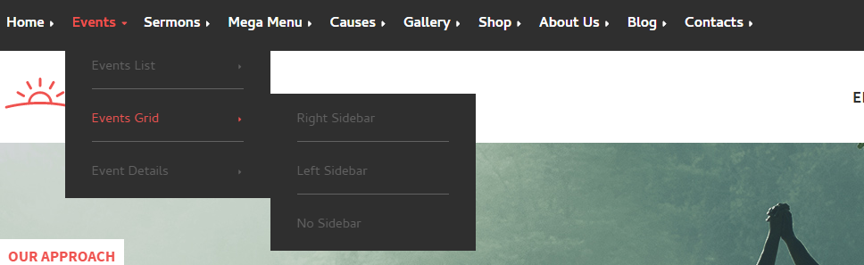
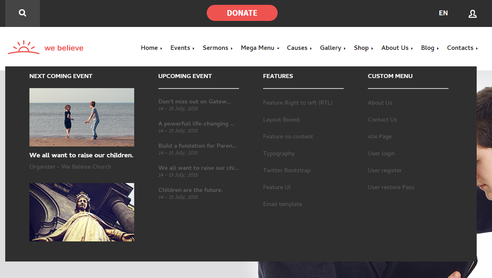
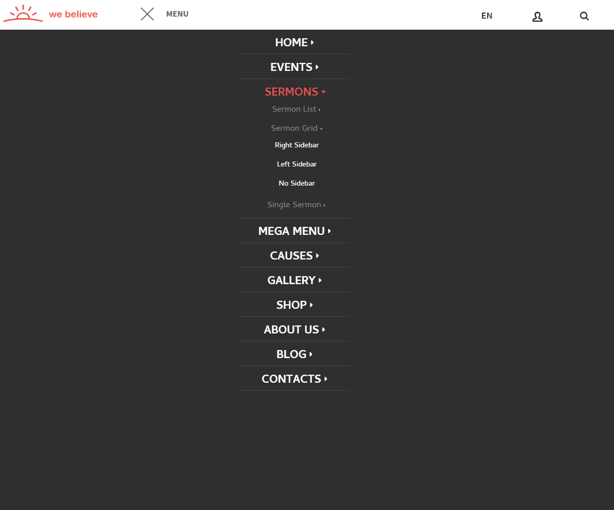
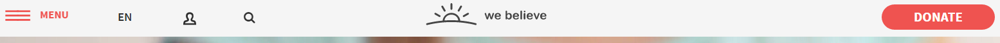
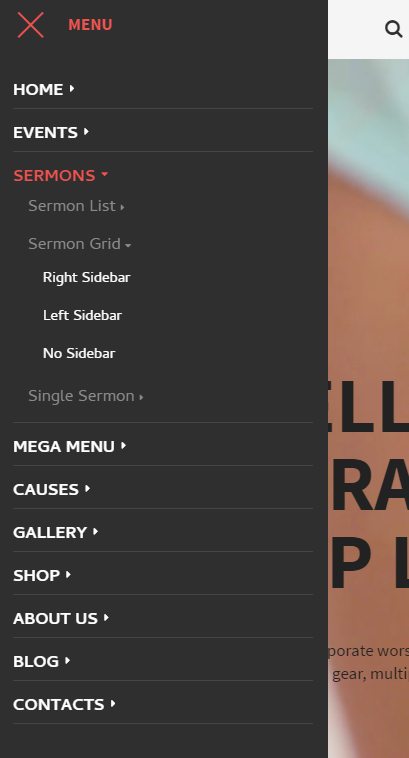
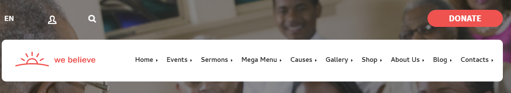
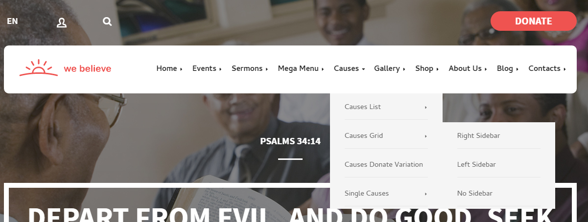

Nav¶
Source¶
Sass styles are in the file
template_src/src/assets/sass/block/nav.sassJade sources are in
template_src/src/jade/partials/mixins/nav.jadeJs source are in
template_src/src/js/module/ui/nav.jsVariations¶
Webelieve comes with 6 menu variations.
Default variation v1
<nav class="nav nav--v1">Variation v2
<nav class="nav nav--v2">Variation v3
<nav class="nav nav--v3">Opened
Variation v4
<nav class="nav nav--v4">Opened
Variation v5
<nav class="nav nav--v5">Opened
Variation v6
<nav class="nav nav--v6">Opened

Note
These variation can be activated through block modifier, inside structure leaves untouched.
Example¶
<!-- BEGIN nav-->
<nav class="nav nav--v2">
<ul class="nav__list">
<!-- class has-children for items with dropdown-->
<!-- class active for active item-->
<!-- first level of items must have class nav__item--lvl-1-->
<li class="nav__item nav__item--lvl-1 has-children active"><a class="nav__link">Simple Dropdown</a>
<div class="nav__sub">
<ul class="nav__list">
<!-- class nav__item--lvl-sub for seconds and deep levels-->
<li class="nav__item nav__item--lvl-sub active"><a class="nav__link">Item 1</a></li>
<li class="nav__item nav__item--lvl-sub"><a class="nav__link">Item 2</a></li>
</ul>
</div>
</li>
<li class="nav__item nav__item--lvl-1 has-children"><a class="nav__link">Expanded Dropdown</a>
<!-- nav__sub--col-2 2 columns dropdown-->
<div class="nav__sub nav__sub--col-2">
<ul class="nav__list">
<!-- nav__group this is a column-->
<li class="nav__group">
<h5 class="nav__subtitle">Group 1</h5>
<ul class="nav__list">
<li class="nav__item nav__item--group"><a class="nav__link">Item 1.1</a></li>
<li class="nav__item nav__item--group"><a class="nav__link">Item 1.2</a></li>
</ul>
</li>
<li class="nav__group">
<h5 class="nav__subtitle">Group 2</h5>
<ul class="nav__list">
<li class="nav__item nav__item--group"><a class="nav__link">Item 2.1</a></li>
<li class="nav__item nav__item--group"><a class="nav__link">Item 2.2</a></li>
</ul>
</li>
</ul>
</div>
</li>
<li class="nav__item nav__item--lvl-1 has-children"><a data-toggle="dropdown" class="nav__link">Subitem Dropdown</a>
<div class="nav__sub">
<ul class="nav__list">
<li class="nav__item nav__item--lvl-sub"><a class="nav__link">Item 3</a></li>
<li class="nav__item nav__item--lvl-sub"><a class="nav__link">Item 4</a></li>
<li class="nav__item nav__item--lvl-sub has-children"><a class="nav__link">Subitems</a>
<div class="nav__sub nav__sub--lvl-1">
<ul class="nav__list">
<li class="nav__item nav__item--lvl-sub"><a class="nav__link">Subitem 1</a></li>
<li class="nav__item nav__item--lvl-sub"><a class="nav__link">Subitem 2</a></li>
</ul>
</div>
</li>
</ul>
</div>
</li>
<li class="nav__item nav__item--lvl-1"><a class="nav__link">Simple link</a></li>
</ul>
</nav>
Usage¶
The second and deeper levels must have a additional class
nav__item--lvl-sub.In order to display large submenu, you need to add class
nav__item--mega.Active item should be set by adding the
active class.By default dropdown menu are opened on hover, when are on desktop. For ipad/mobile mode we enable on click interaction. If you want open desktop menu on click, add class
js-nav-onclick.<!-- button which open main menu -->
<button class="header__menu js-menu-btn"><span>Menu</span></button>
Note
If the top-level menu items are close to the right edge of the menu, it is a good idea to align dropdown
by the right side/ for this add class nav__sub--left. We automatically provide a script which will do this.